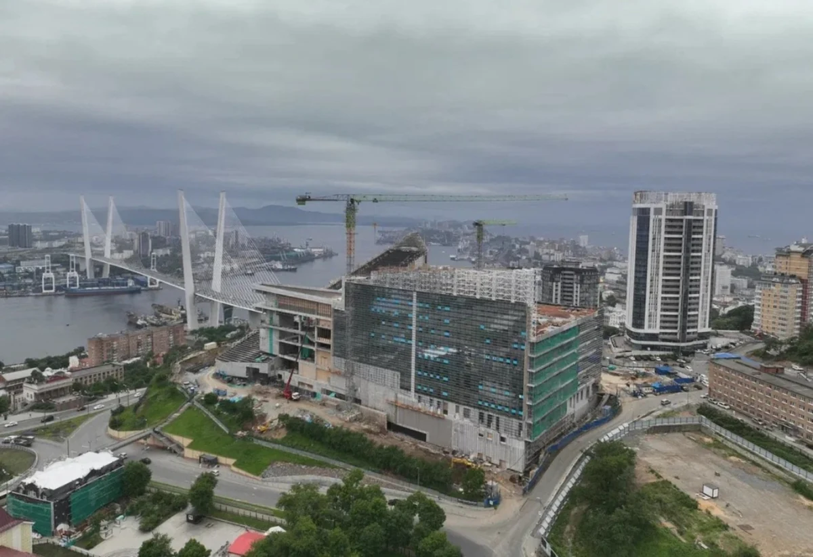

Знакомимся с объектом
Вы описываете задачу и передаёте доступные фотографии или чертежи.
Фасадные работы на высоте
Подберём организацию доступа под геометрию здания и условия площадки. У компании есть собственные фасадные подъёмники и промышленные альпинисты.
Обсудить задачу
Состав работ
Точный состав, стоимость и сроки определяются после изучения исходных данных и закрепляются в договоре.
Порядок взаимодействия
Вы описываете задачу и передаёте доступные фотографии или чертежи.
Обсуждаем объём, доступ, исходные решения и необходимость обследования.
Фиксируем состав работ, порядок выполнения и условия для вашего объекта.
До первого разговора
Учитываются высота, форма фасада, состояние кровли, возможность размещения техники и ограничения площадки. Окончательное решение принимается для конкретного объекта.
Фотографии здания и кровли, ориентировочная высота, описание работ и информация о доступе на территорию.
В заявке уже будет выбрана эта задача.